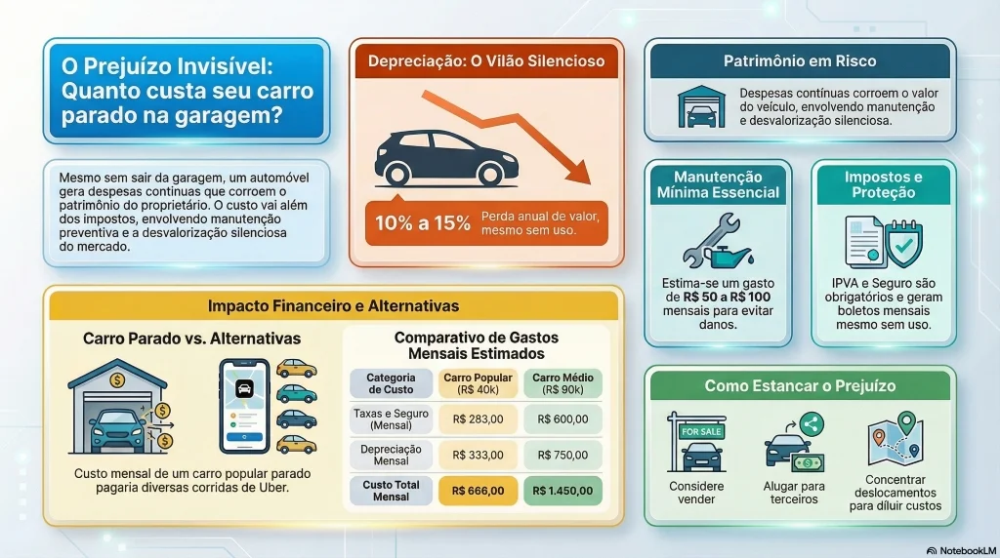

Quanto custa ter um carro parado na garagem? Veja o prejuízo invisível

Muita gente acredita que um carro na garagem é um "dinheiro guardado" ou que, ao não rodar, os gastos cessam completamente. No entanto, a realidade financeira é bem diferente. Mesmo sem girar a chave ou gastar uma gota de combustível, o automóvel continua gerando despesas reais e, muitas vezes, invisíveis para o proprietário.
Ter um carro parado envolve custos que vão desde impostos obrigatórios e seguros até o "vilão silencioso" de qualquer patrimônio automotivo: a depreciação. O simples fato de o tempo passar faz com que seu veículo perca valor de mercado, independentemente da quilometragem no painel. Neste artigo, vamos detalhar quanto custa ter um carro parado na garagem e mostrar por que esse prejuízo pode ser maior do que você imagina. Prepare-se para descobrir o custo real mensal de manter um veículo sem uso e se realmente vale a pena mantê-lo ou se é hora de buscar alternativas mais econômicas.
O carro parado realmente gera custo?
Sim, e muito. O custo do carro pode ser dividido em duas categorias principais: os custos fixos (que você paga simplesmente pelo carro existir) e os custos invisíveis (perda de valor e custo de oportunidade).
Quando o carro não sai da garagem, você elimina os custos variáveis como gasolina, pedágios e lavagens frequentes, mas os custos fixos permanecem intactos. Além disso, a depreciação — que é a perda de valor de revenda — continua acontecendo mês após mês, silenciosamente corroendo seu patrimônio.
Custos fixos de um carro parado
Mesmo que o odômetro não mude, os boletos continuam chegando pontualmente.
IPVA proporcional
O IPVA é um imposto anual sobre a propriedade. Se o seu carro vale R$ 50.000 e a alíquota em seu estado é de 4%, você paga R$ 2.000 por ano. Dividindo por 12, são R$ 166 por mês só de imposto, sem o carro ter se movido um centímetro.
Seguro
O seguro automotivo é essencial, mesmo para carros parados. Há riscos de roubo na garagem, danos estruturais como incêndios ou enchentes, além da cobertura de terceiros caso precise movimentar o veículo. Um seguro médio de R$ 2.400 anual representa um custo de R$ 200 mensais.
Manutenção Mínima e Danos por Desuso
Carro parado também estraga, e muitas vezes mais rápido do que um carro que roda diariamente. O desuso provoca danos físicos específicos:
- Descarregamento da Bateria: Sistemas eletrônicos em standby (alarme, rastreador, central eletrônica) consomem energia continuamente. Uma bateria comum perde a carga total após 15 a 30 dias de inatividade.
- Deformação dos Pneus (Flat Spotting): O peso estático do veículo pressionando o mesmo ponto do pneu contra o solo de concreto deforma a estrutura de borracha, gerando vibrações crônicas ao rodar.
- Envelhecimento do Combustível: A gasolina comum começa a oxidar e envelhecer após 60 dias no tanque. Ela cria uma goma espessa que entope bombas de combustível, bicos injetores e filtros.
- Ressecamento de Selos e Retentores: A falta de circulação de óleo faz com que as juntas de borracha do motor e do compressor do ar-condicionado fiquem ressecadas, gerando vazamentos de lubrificante e gás refrigerante.
O Custo de Oportunidade do Capital Investido (Rendimento Perdido)
Ao manter um automóvel parado na garagem, você possui um capital imobilizado em um bem que desvaloriza. Esse dinheiro poderia estar rendendo juros mensais em investimentos seguros de renda fixa (como Tesouro Selic ou CDB de liquidez diária renderizando cerca de 10% a.a.):
- Carro de R$ 50.000 parado: Deixa de render cerca de R$ 416,00 por mês (aproximadamente R$ 5.000,00 por ano limpos).
- Carro de R$ 100.000 parado: Deixa de render cerca de R$ 833,00 por mês (cerca de R$ 10.000,00 por ano).
Depreciação de Mercado
Este é o prejuízo invisível definitivo. Um carro de R$ 50.000 desvaloriza em média 10% ao ano, representando uma perda patrimonial de R$ 416,00 por mês. Somando a desvalorização com o rendimento perdido do capital, você perde R$ 832,00 por mês apenas por manter esse veículo sob sua propriedade.
👉 Use a Calculadora de depreciação de carro para ver quanto o seu está desvalorizando agora mesmo.
Quanto custa um carro parado por mês (simulação)
Para facilitar a visualização, montamos uma tabela comparativa entre dois perfis comuns de veículos no Brasil, considerando valores médios de mercado.
| Custo Mensal (Estimativa) | Carro Popular (R$ 40.000) | Carro Médio (R$ 90.000) |
|---|---|---|
| IPVA (Proporcional/12) | R$ 133,00 | R$ 300,00 |
| Seguro (Proporcional/12) | R$ 150,00 | R$ 300,00 |
| Manutenção Mínima | R$ 50,00 | R$ 100,00 |
| Depreciação Mensal (Est.) | R$ 333,00 | R$ 750,00 |
| Custo Total Mensal | R$ 666,00 | R$ 1.450,00 |
Vale a pena manter um carro sem usar?
Se você gasta R$ 666 por mês para ter um carro popular parado, esse valor cobriria facilmente diversas corridas de Uber ou até aluguéis de carros pontuais para viagens de fim de semana.
Muitas vezes, a conveniência de ter o carro à disposição não justifica o "vazamento" financeiro. Para quem mora em grandes centros urbanos, o custo de oportunidade é alto: esse dinheiro investido poderia estar rendendo juros, em vez de ser consumido pela desvalorização.
👉 Compare com a Calculadora carro vs Uber e veja qual sai mais barato para o seu perfil.
Como reduzir o prejuízo
Se o seu carro fica mais tempo parado do que rodando, você tem algumas alternativas para estancar a perda de dinheiro:
- Vender: É a opção mais radical, mas financeiramente mais lógica se o uso for esporádico. O dinheiro da venda aplicado pode pagar seus transportes alternativos com sobra.
- Alugar: Existem plataformas que permitem alugar seu carro para terceiros enquanto você não o usa, transformando o custo em renda.
- Usar mais: Se você realmente precisa do carro, tente concentrar seus deslocamentos nele para que o custo fixo seja diluído e o investimento "valha a pena" pela utilidade.
Conclusão
Manter um carro parado é uma decisão financeira que deve ser pesada com cuidado. O prejuízo invisível da depreciação somado aos custos fixos pode comprometer uma fatia generosa do seu orçamento mensal sem trazer nenhum benefício prático imediato.
Quer ver o custo real do seu carro?
👉 Use o Simulador principal de custo do carro e tenha os números exatos do seu veículo.